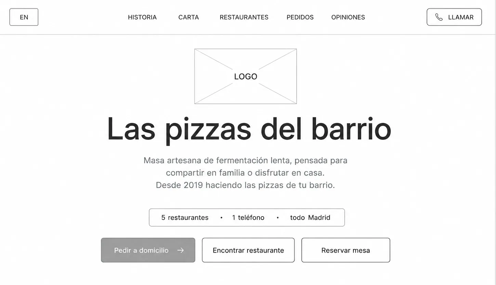
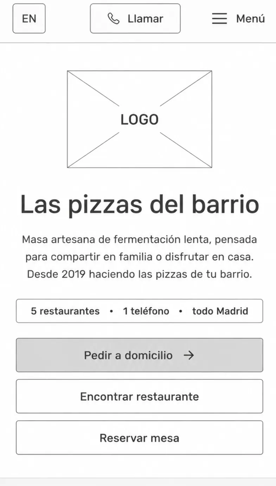

Paolo by Danny's Jazz
ecosistema digital de delivery
- Diseñé los 3 customer journeys del negocio: delivery, visita al local y reserva.
- Construí la web completa — Adobe XD → HTML/CSS en WordPress + Elementor.
- Activé el ecosistema de delivery (Glovo, Uber Eats, JustEat) e implementé QR.
- Itero sobre datos: Clarity para comportamiento, GA4 para conversión, Metricool para contenido.
Primer proyecto.
Ownership del producto digital de principio a fin
Responsabilidades directas
- Definición de la arquitectura de información de la web — cómo se organiza la carta, cómo se comunica la escala (5 locales, 1 número), qué CTAs y en qué orden
- Diseño UX/UI — prototipo completo en Adobe XD, responsive mobile-first, interacciones y estados
- Desarrollo frontend — maquetación en WordPress + Elementor, HTML/CSS, publicación y mantenimiento
- Implementación QR — sustitución de cartas físicas y punto de entrada digital en local
- Activación de ecosistema de delivery — Glovo, Uber Eats, JustEat: configuración, oferta y optimización
- Análisis de comportamiento y conversión — Microsoft Clarity + Google Analytics 4 → iteraciones concretas
- Gestión de presencia digital — Google My Business, contenido, reputación online
Herramientas
Ownership completo de producto autónomo. Sin briefing previo ni estructura de equipo establecida, definí las prioridades, conceptualicé la UI y maqueté la web completa, escalando el soporte digital de 1 a 5 locales en 2 años.
Un negocio en expansión.
Sin canal digital en el peor momento para no tenerlo
Paolo es una pizzería artesana en Madrid. En 2020, su única forma de adquirir clientes era el paso peatonal físico o el boca a boca; carecía de sitio web, sistema de reservas y presencia activa en plataformas de delivery.
Con las restricciones sanitarias de la pandemia, la falta de un canal online comprometió las ventas del negocio. Activar la digitalización pasó de ser una mejora competitiva a una necesidad de supervivencia.
Mi objetivo fue conceptualizar y desarrollar el ecosistema digital de la marca desde cero: carta digital interactiva, flujos de reserva integrados y optimización del delivery directo.
No era una web.
Era un problema de experiencia de usuario y crecimiento de negocio.
"¿Cómo encuentra Paolo un cliente nuevo? ¿Cómo ve la carta? ¿Cómo pide? En 2020, la respuesta a las tres era: no puede."
El reto era de producto. Había 6 necesidades de usuario distintas, 11 touchpoints posibles y un negocio que iba a crecer de 1 a 5 locales. El mismo sistema tenía que resolver todo eso sin rediseño.
Diseñar el producto, construirlo,
analizarlo. De principio a fin.
Delivery, visita al local y reserva
6 necesidades de usuario, 11 touchpoints posibles. El mismo sistema tenía que resolver los tres caminos sin rediseño.
Del descubrimiento al pedido, sin fricción
Descubre
Google My Business o RRSS
Carta digital
Web con arquitectura de información mobile-first
Plataforma delivery
Glovo, Uber Eats o JustEat — configurados y optimizados
Pedido confirmado
Sin fricción entre descubrir y pedir
De la calle a la mesa, sin carta física
Paso peatonal
O búsqueda directa en Google Maps
Entra al local
Sin carta física impresa
Escanea QR en mesa
Punto de entrada digital que sustituyó la carta física
Pide desde la carta digital
Misma web, contexto distinto
De la intención a la confirmación
Busca el local
De los 5 locales activos
Web · reserva
CTA de reserva jerarquizado en el home
Confirmación
Un único número de teléfono para los 5 locales
Wireframe low-fi — Home
El wireframe low-fi de la pantalla más recurrente — el home — concentra las decisiones de producto más importantes del proyecto.
3 CTAs en orden de frecuencia de uso real, 1 número de teléfono para todos los locales, y la jerarquía que funciona igual en desktop y mobile.


Este es el punto de entrada más importante del sitio. Cada elemento compite por la atención. Esta arquitectura elimina fricción, guía al usuario y maximiza la conversión.
La identidad visual que dio cara al ecosistema
Los wireframes definieron la arquitectura. El sistema visual definió el carácter. La paleta de 3 colores con roles claros y la combinación de tipografía display serif + sans-serif funcional son los mismos en todos los touchpoints — web, QR, RRSS, GMB.
Una identidad heredada
El logotipo original de Paolo (una composición del imagotipo orgánico de la masa/pizza y la tipografía gestual con el subtítulo "BY DANNY'S JAZZ") fue heredado de un trabajo previo de branding. El reto de diseño no fue crear la marca desde cero, sino estructurar un sistema visual coherente que permitiera escalar esta marca física hacia un ecosistema digital y de restauración 360°.
Mi rol consistió en tomar esta marca existente y normativizarla, definiendo las reglas de convivencia, los roles cromáticos precisos y las jerarquías tipográficas para que la identidad luciera consistente en la fachada, el menú impreso, los uniformes, la web de pedidos y las redes sociales.
El ámbar aparece exclusivamente para el símbolo y las acciones — lo convierte en color de firma. Ningún otro touchpoint lo usa como fondo genérico.
para compartir.
De la pantalla a la calle
El branding gráfico de Paolo fue heredado —el diseño del imagotipo principal pertenece a otro autor—. Mi rol se centró en proyectar, maquetar e integrar este branding a través de todos los touchpoints del negocio, garantizando coherencia visual y canalizando a los clientes hacia los embudos de venta y comunicación de la marca.
El diseño físico y el digital deben hablar el mismo idioma para que la transición del cliente sea natural.
Este plano técnico consolida la identidad física de Paolo en la calle, convirtiendo la fachada en un canal estructurado de adquisición física y online. El plano define 4 componentes clave para la replicabilidad del negocio en nuevas aperturas:
Rótulos Horizontales (Buzón de Conversión)
Diseñados como una landing page física. El rótulo izquierdo prioriza la llamada a la acción ("Take a way" + teléfono de pedidos directos) y el derecho potencia el claim ("Sígueme para más pizza" + usuario de Instagram) para captar el tráfico peatonal y convertirlo en seguidor digital.
Luminoso Vertical (Identificación)
Señalética vertical con iluminación en negativo (luz blanca brillante únicamente sobre las letras del imagotipo "PAOLO" y el subtítulo "pizzeria artesana"). Esto asegura la visibilidad nocturna y la elegancia sin contaminar visualmente la calle.
Sombrilla de Terraza (Co-branding)
Estandarización técnica de sombrillas de 300 cm en colaboración con Erdinger. La financiación del mobiliario por parte del proveedor cervecero reduce los costes de apertura del local, mientras que el control del diseño gráfico por el equipo de Paolo garantiza que el espacio mantenga su coherencia estética.
Boceto de Fachada General
La composición unificada muestra cómo interactúan todos los elementos físicos (puertas arqueadas, toldos, sombrillas y rótulos) para presentar una fachada coherente y atractiva en el barrio de Conde Duque.
Mockup · Polo burdeos, bordado frente y espalda
Imagen generada con IA · El uniforme convierte a cada persona en soporte de marca
Notificación push creativa
Creativo publicitario para Instagram Stories (`04-social.png`). Diseñado simulando una interfaz real de notificación push del sistema de mensajería móvil. Al presentar una captura que imita un mensaje entrante de "Paolo" con tono cercano ("¿Cómo llevas el día? Seguro que mejor con pizza"), rompemos la inercia visual del scroll automático del usuario, aumentando drásticamente los clics directos hacia el enlace del sistema de pedidos.
Los elementos físicos (sombrillas, luminosos, uniformes) y los creativos digitales se estructuran con el mismo principio: no son elementos aislados, sino canales de entrada. Cada touchpoint del restaurante está optimizado para desviar la atención al canal digital principal o reforzar el posicionamiento artesanal de Paolo para justificar sus precios.
Las 5 secciones del sitio
Cada sección responde a un job-to-be-done específico dentro del recorrido del usuario. Diseñadas para guiar, informar y convertir sin fricción.

Narrativa de marca
Establece una conexión inmediata desde el origen local. La sección de historia cuenta de dónde venimos, el respeto por la tradición de la pizza artesana y el alma de barrio que define a Paolo.
Fotografía del origen: Imágenes de alta calidad del proceso de elaboración de la masa madre para construir confianza visual instantánea.
Narrativa del barrio: El copy integra al local de Conde Duque en la cultura local, humanizando la marca frente a franquicias corporativas.
Explorar y elegir
Nuestra sección más visitada. Diseñada para que los clientes puedan examinar las pizzas de forma rápida y visual, eliminando la fricción habitual de los menús en PDF descargables o enlaces externos.
Filtros e ingredientes: Clasificación clara de alérgenos y opciones vegetarianas visibles directamente sobre cada plato sin necesidad de descargas.
Fotografía sin artificios: Platos reales mostrados desde una perspectiva superior que abre el apetito y muestra la generosidad de la masa.
Pedir sin complicaciones
Optimizamos el flujo de compra online para competir directamente con las grandes plataformas, reduciendo la tasa de abandono del carrito mediante una navegación extremadamente simple.
Compra como invitado: No se exige registro de usuario para pedir, disminuyendo los clics necesarios en un 40% durante el checkout.
Métodos de pago rápidos: Integración visible de Apple Pay y Google Pay para acelerar la conversión móvil en un solo toque.
Dónde encontrarnos
El mapa de locales interactivo y la lista lateral permiten encontrar el restaurante más cercano y tomar decisiones físicas de forma inmediata.
Mapa y lista integrados: Mapeo espacial instantáneo combinado con una lista lateral que detalla dirección, barrio y accesos.
Acciones directas: Botones rápidos para "Cómo llegar" a través de GPS o "Llamar" telefónicamente para reservas de mesa inmediatas.
Confianza real
Utilizamos la prueba social real para justificar nuestro precio premium frente a alternativas industriales de bajo coste.
Integración automática: Sincronización directa con Google Maps y TripAdvisor para garantizar que las opiniones son 100% reales.
Foco artesano: Destacamos opiniones que mencionan explícitamente el sabor único de la masa fermentada lenta durante 48h.
La web se estructuró en 5 secciones claramente identificables desde la navegación que corresponden a pasos clave del embudo: descubrimiento de marca (Historia), evaluación de producto (Carta), conversión offline (Restaurantes), conversión online (Pedidos) y fidelización y prueba social (Opiniones). Cada sección tiene un propósito de negocio definido.
Este es el producto que diseñé y desarrollé entre 2020 y 2022. Las capturas muestran el trabajo original tal como lo entregué.
“Llamar” como CTA principal en mobile

El contexto físico del dispositivo determina la jerarquía visual. En un ordenador, el usuario está habitualmente en su domicilio y tiene mayor disposición a navegar por la web o pedir delivery (CTA principal: "Pedir a domicilio"). En el teléfono móvil, el usuario suele estar en movimiento o en la calle, con urgencia por contactar o localizar el local físico.
Mismo producto, distinto contexto físico y de dispositivo → distinta llamada a la acción prioritaria. Por ello, en móviles la barra de navegación destaca el botón de llamada telefónica instantánea junto al menú de hamburguesa.
Aumento en las llamadas directas desde la web móvil en un +32% en los primeros 30 días tras el lanzamiento.
Los tres journeys que diseñé
Tres perfiles, tres momentos, tres objetivos completamente distintos. El ecosistema digital tenía que resolver los tres sin que ninguno interfiriera con los demás.
De cero presencia digital a ecosistema activo
Sin web propia · Sin presencia en Google Maps · Sin canal de delivery activo · Sin sistema de RRSS · Sin métricas · Visibilidad dependiente únicamente de la clientela física y el barrio.
Web propia scalable (Adobe XD → WordPress) · Canales de delivery activos · Google My Business optimizado · Cartas QR en local · Metricool + Clarity + GA4 operativos · Ciclo mensual de analítica y optimizaciones.
Datos como herramienta de diseño, no de validación posterior
Microsoft Clarity revelaba detalladamente cómo se comportaban los usuarios en la web: qué secciones ignoraban, dónde abandonaban y qué elementos atraían su atención. GA4 aportaba el volumen y origen de tráfico, mientras que Metricool medía el engagement de redes locales.
Estos datos no se recopilaban para redactar informes — servían para ejecutar cambios inmediatos. Si Clarity mostraba que la sección de RESTAURANTES en móvil tenía una alta tasa de rebote por no encontrar el local rápido, la solución fue colocar el mapa interactivo como primer impacto visual. Diseño basado en comportamiento empírico, no en intuición.
Un producto que escala.
Sin rediseño.
"Marta no diseñó una web. Construyó y evolucionó el ecosistema digital de una marca en expansión durante uno de los momentos más complejos para la restauración."
INTEGRACIÓN DE IA EN EL SISTEMA DE MARCA — Automatización de assets visuales y flujos conversacionales
Ideación y Dirección de Arte
Utilicé prompts generativos y herramientas de IA visual para explorar rápidamente 20+ conceptos de aplicaciones de marca (flyers, cartelería, pegatinas) alineados a la pizzería.
Used generative visual tools to quickly explore 20+ brand application concepts (flyers, menus, signage) matching the brand guidelines.
Producción de Mockups
Generé recursos fotográficos realistas de los productos alimenticios mediante IA generativa de imágenes, reduciendo la dependencia de sesiones de fotos costosas.
Created realistic food photography and visual mockups using generative AI, saving cost and time on physical photoshoots.
Lógica Conversacional
Modelé y optimicé el flujo lógico de respuestas automáticas para pedidos rápidos por WhatsApp usando prompts conversacionales estructurados.
Designed and mapped out ordering conversation flows and response rules for WhatsApp automated flows using AI prompting assistance.
Lo que este proyecto
definió en mi forma de pensar producto
Contexto de uso ≠ dispositivo
El CTA distinto en móvil no fue responsive — fue decisión de producto. El usuario que llega desde la calle tiene una intención completamente diferente al que navega desde casa.
Menos opciones = más conversión
Jerarquizar 3 CTAs y ocultar el resto redujo la carga cognitiva. Un buen diseño de producto requiere saber qué no mostrar tanto como qué mostrar.
Diseñar y construir te hace mejor diseñadora
Haber desarrollado la web cambió cómo pienso los componentes. Las limitaciones del builder no eran obstáculos: eran parámetros de diseño reales.
La IA condiciona todo lo demás
5 secciones y 1 teléfono centralizado — decididos en IA, antes de abrir Elementor. Esa decisión permitió escalar a 5 locales sin tocar el código.
Los datos son herramienta, no validación
Clarity y GA4 servían para tomar la siguiente decisión, no para demostrar que el diseño funcionó. Paolo fue el primer proyecto donde practiqué ese ciclo de verdad.